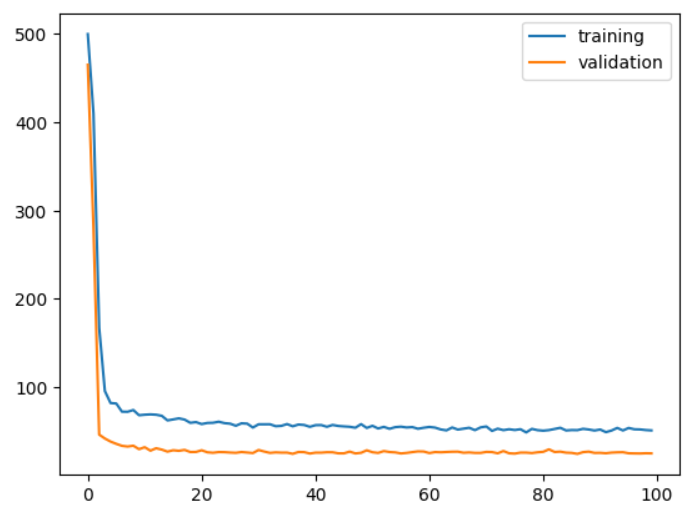

Hyperparameter Tuning in PyTorch
by Sean Bush | April 12, 2026 | 16 min read
In the previous article, An Introduction to PyTorch, we covered the fundamentals of creating a neural network model in PyTorch. We discussed Tensors, the basic building blocks of all PyTorch objects; we discussed how to work with data using Datasets and DataLoaders; and we discussed how to define, train, and test a neural network.
If you have spent any time experimenting with different models, you will quickly realize that sometimes you simply cannot get your model to perform well. There are a variety of different adjustments you can make to the model to try to get it to perform better, settings that you set before model training ever begins. These are hyperparameters, model parameters that are not learned from data but are instead chosen by the developer. You can try to improve model performance by choosing different hyperparameters, but this can be tedious as there are lots of different combinations of settings to try. The process can take a significant amount of time and be difficult to keep track of. The process of finding an optimal set of hyperparameters for your model is called hyperparameter tuning, and there are several algorithms designed to automate the process so you do not have to waste your time with trial and error.
Hyperparameter tuning is not something PyTorch provides by default. Rather, you must either use an additional library or you must implement it yourself. This article will be doing the latter. This article represents my personal system for performing hyperparameter tuning, which I developed while studying Data Science at Western Governors University. Unlike the previous article, which mostly just described the common syntax used for most PyTorch projects, the contents of this article reflect my own unique methodology. This article assumes you have an intermediate-level understanding of Python and an understanding of the concepts explained in the previous article.
Hyperparameter Tuning at a Glance
Fundamentally, hyperparameter tuning is a process of brute-force searching for a set of hyperparameters that works well. You train a model with one set of hyperparameters and record its performance. Then you repeat with another set of hyperparameters. Once you have seen a sufficient number of models, you select the hyperparameters that performed the best. As you may imagine, this can take a significant amount of time, as with each iteration of the process, you are training a new model from scratch.
There are two main ways to perform hyperparameter tuning. The first is through a grid search. In a grid search, you determine a set of possible values for each hyperparameter you want to tune. Let's say, for example, that we are training a linear regression model with two hyperparameters: the regularization coefficient and the learning rate. We could determine that we want to try out the values 0, 0.2, 0.4, 0.5, 0.6, 0.8, and 1.0 for the regularization coefficient, and 0.005, 0.01, and 0.15 for the learning rate. In a grid search, you create one model for every single combination of values. If your grid is relatively small, then this is feasible, but with larger grids or with more hyperparameters to tune, the number of models can become prohibitively large quickly.
The other way to perform hyperparameter tuning is through a random search. You still define a hyperparameter grid as before, but then, rather than checking every single combination of hyperparameters, you simply try out random combinations. You can determine how many random combinations to check. The advantage is that the number of models you train is completely up to you, meaning that you can add as many hyperparameters as you'd like without increasing the number of models to train. The downside, however, is that you may still miss optimal combinations of hyperparameters. With a modestly sized grid, this is usually not a significant concern, which makes randomized searches ideal in many situations. This analysis will implement a randomized search to perform hyperparameter tuning.
One last detail to be discussed about tuning before we start writing code is that of data. In the previous article, we worked with two versions of our dataset, the training set and the testing set. The purpose of this split is to be able to test the model on data it was not trained on, so we can see how well the model performs outside the training set. If you perform hyperparameter tuning, you need to introduce a third set, generally called the validation set. As we try out different combinations of hyperparameters, each model will be trained on the training set. Then, to compare the models against each other, we will see how they perform on the validation set. The model that performs the best will then be selected to perform further analysis. However, we need to test this model on a third set of data, the testing set. This is because we already know the model performs well on the validation set--we used that set to choose the best-performing model after all. We need to see how it performs on another set to see if that good performance was a fluke due to being well-aligned with the particular examples in the validation set or a genuine property of the model that will generalize to any arbitrary set. With that said, we can dig into the code.
Install libraries & Download data
If you haven't already, make sure you install PyTorch, with CUDA if you have a GPU available. I also recommend installing the Jupyter package to use as the development environment. Additionally, for this exploration, you will need to install Scikit-Learn, Pandas, Numpy, MatPlotLib, and TQDM.
The dataset for this analysis will be a synthetic dataset simulating student performance data on a generic exam. You can download the dataset from Kaggle. Specifically, you want to download the file "ultimate_student_productivity_dataset_5000.csv". Per the entry on Kaggle, this dataset is free to use under the Creative Commons - Public Domain license.
Import libraries
With the libraries installed, we will begin our analysis by importing the libraries, as follows.
from dataclasses import dataclass
import matplotlib.pyplot as plt
import numpy as np
import pandas as pd
import random
from sklearn.model_selection import train_test_split
import torch
from tqdm import tqdm
Note that in addition to the aforementioned libraries, we are also importing the random and dataclasses modules. These are built into Python and should not require additional installation.
You should also verify that PyTorch has been set up correctly with CUDA, if you are using it, with the following line of code:
torch.cuda.is_available()
Output:
True
If this function call returns false, something has gone wrong with your installation of PyTorch with CUDA.
Load and explore data
Now, we can load the data set and get a sense of its contents. Use the read_csv() function from Pandas to load the data from 'ultimate_student_productivity_dataset_5000.csv'. I encourage you to print the contents of the dataframe and explore what each column represents.
df = pd.read_csv('ultimate_student_productivity_dataset_5000.csv')
df
The output of this line is too long to repeat here, but if you have looked through it, you should have an understanding of the dataset. Each record represents a particular student. It records various information about the student's demographics, background, and habits. It also records a score for some fictional exam.
Once you have a sense of what data is present in this set, you can also call the info() method to see what each column's data type is and if there are any missing values.
df.info()
Output:
<class 'pandas.DataFrame'>
RangeIndex: 5000 entries, 0 to 4999
Data columns (total 21 columns):
# Column Non-Null Count Dtype
--- ------ -------------- -----
0 student_id 5000 non-null int64
1 age 5000 non-null int64
2 gender 5000 non-null str
3 academic_level 5000 non-null str
4 study_hours 5000 non-null float64
5 self_study_hours 5000 non-null float64
6 online_classes_hours 5000 non-null float64
7 social_media_hours 5000 non-null float64
8 gaming_hours 5000 non-null float64
9 sleep_hours 5000 non-null float64
10 screen_time_hours 5000 non-null float64
11 exercise_minutes 5000 non-null int64
12 caffeine_intake_mg 5000 non-null int64
13 part_time_job 5000 non-null int64
14 upcoming_deadline 5000 non-null int64
15 internet_quality 5000 non-null str
16 mental_health_score 5000 non-null int64
17 focus_index 5000 non-null float64
18 burnout_level 5000 non-null float64
19 productivity_score 5000 non-null float64
20 exam_score 5000 non-null float64
dtypes: float64(11), int64(7), str(3)
memory usage: 820.4 KB
As you can see, there are no missing values, and most of the data is stored as a number, but there are three that are stored as strings: gender, academic level, and internet quality.
Define the problem
Now that we have a sense of what the data represents, we can define the problem. The goal of this analysis will be to develop a model that can predict a student's exam score based on the various factors listed in the data set. We will develop this model in PyTorch and will use hyperparameter tuning to optimize its performance.
It should be noted that using a neural network to solve a problem like this one is probably inadvisable in real-world settings. There are other models, like gradient boosting regression, which will perform better than a standard network if your goal is to create a model with strong predictive power. If your goal is to create a model that has explanatory power, there are significantly easier-to-interpret models like linear regression available. However, for the purpose of this analysis, the particular dataset is of little importance. It is simply meant to provide a backdrop on which we can explore hyperparameter tuning in PyTorch.
Prepare the data
Now we will prepare our data for analysis. First, let's choose which columns we are going to use in our analysis. We need the exam score, since that will be the output variable we are trying to predict. We do not need the student ID variable, since a student's ID has nothing to do with their exam scores. Likewise, a student's age and academic level are unlikely to influence the scores, since tests are designed with certain ages in mind. The other columns we may consider removing are the non-numeric ones. We could use a process like one-hot encoding to include these in the analysis, but for our purposes, the easiest way to handle them is simply to remove them--there are plenty of other columns in the dataset that we can use as predictors. The following line of code removes the aforementioned columns:
data = df.drop(columns=['student_id', 'age', 'academic_level']).select_dtypes(exclude='str')
The next step in preparing the data will be standardizing the columns. There are ways to do this easily with a library like Scikit-Learn, but it is also fairly easy to just do it manually. For each column, simply subtract the mean and divide by the standard deviation. Now every column will have a mean of zero and a standard deviation of one.
for column in data:
if column == 'exam_score':
continue
mean = data[column].mean()
std = data[column].std()
std = std if std != 0 else 1 # Make sure you're not dividing by zero!
data[column] = (data[column] - mean) / std
We will also need to handle splitting the dataset. To split the data, we will be using Scikit-learn's train_test_split() function. However, this function can only split the data into two parts, not the three we are looking for. As such, it will be helpful to define a helper function that can first split off the testing data, then split the remaining data into training and validation sets.
def train_validate_test_split(df: pd.DataFrame,
validate_proportion: float,
test_proportion: float,
random_state: int | None = None
) -> tuple[pd.DataFrame, pd.DataFrame, pd.DataFrame]:
temp, test = train_test_split(df, test_size=test_proportion, random_state=random_state)
relative_validation_split = validate_proportion / (1 - test_proportion)
train, validate = train_test_split(df, test_size=relative_validation_split, random_state=random_state)
return train, validate, test
Now we can save the data into separate files for convenience, using the RNG seed of 0 to ensure reproducibility.
data = pd.read_csv('data.csv')
train_data, validate_data, test_data = train_validate_test_split(data, validate_proportion=0.2, test_proportion=0.2, random_state=0)
train_data.to_csv('train_data.csv', index=False)
validate_data.to_csv('validate_data.csv', index=False)
test_data.to_csv('test_data.csv', index=False)
Define the dataset
Now, we will begin the analysis by creating a PyTorch dataset object to represent our data. Unlike in the previous article, where Torchvision supplied the Dataset object, we will need to create one ourselves. Recall from the previous article that we need to define two methods for our dataset to function: __getitem__() and __len__(). We will also define a constructor to load the data into memory.
class StudentPerformanceData(torch.utils.data.Dataset):
def __init__(self, split: str):
if split not in ['train', 'test', 'validate']:
raise Exception('"split" parameter must be "train", "validate", or "test"')
filepath = f'{split}_data.csv'
df = pd.read_csv(filepath)
self.inputs = torch.tensor(df.drop(columns='exam_score').to_numpy(), dtype=torch.float32)
self.labels = torch.tensor(df['exam_score'].to_numpy(), dtype=torch.float32).reshape(-1, 1)
def __getitem__(self, idx: int) -> tuple[torch.Tensor, torch.Tensor]:
return self.inputs[idx], self.labels[idx]
def __len__(self) -> int:
return self.inputs.shape[0]
To use this dataset, we specify which split we want to use, 'train', 'validate', or 'test', and it loads the relevant dataset from file storage. It then identifies that exam score column as the label and all others as the inputs, and saves both as tensors. When __getitem__() is called for some index, it returns the inputs and label for that particular index in a tuple. Try the following code to see the object in action:
train_dataset = StudentPerformanceData(split='train')
print(len(train_dataset))
print(train_dataset[0])
Output:
4000
(tensor([-0.8891, -0.5847, 1.2074, -0.1213, -1.4084, 1.7818, 0.9776, -1.5032,
0.1359, 1.0035, 0.9971, 0.1717, -0.9497, 1.0687, -0.8931]), tensor([1.]))
Define the model
Next, we want to define the architecture of the model itself. For this analysis, we will use a simple fully-connected model with linear layers. We will include dropout layers, with the ability to choose different dropout rates (this will be one of our hyperparameters), and we will use ReLU activation layers.
class StudentTestScoreRegressor(torch.nn.Module):
def __init__(self, *, dropout: float = 0):
super().__init__()
self.fc1 = torch.nn.Linear(15, 10)
self.fc2 = torch.nn.Linear(10, 5)
self.fc3 = torch.nn.Linear(5, 1)
self.dropout = torch.nn.Dropout(dropout)
self.relu = torch.nn.ReLU()
def forward(self, x: torch.Tensor) -> torch.Tensor:
x = self.fc1(x)
x = self.relu(x)
x = self.dropout(x)
x = self.fc2(x)
x = self.relu(x)
x = self.dropout(x)
out = self.fc3(x)
return out
This model has three main layers. The first takes in the 15 inputs and maps them to 10 neurons, followed by ReLU and dropout layers. The second maps the 10 neurons to 5 neurons, followed by another set of ReLU and dropout layers. The final layer takes in the 5 neurons and maps them to a single output value representing the model's prediction for the exam score.
Define hyperparameters
Now we can get to the heart of this analysis. We need to determine which hyperparameters we want to tune. We already mentioned that we will tune the dropout rate. Additionally, we will be using Adam as our optimizer, so we can tune the learning rate and the weight decay. We will take these hyperparameters and create a Dataclass. If you are unfamiliar with Dataclasses, I recommend reading this article from GeeksForGeeks. The Dataclass will be class Config and will list every hyperparameter we wish to tune, along with data types and default values. Providing defaults will be useful, as if we decide not to tune one of the parameters, it has a default to fall back to.
@dataclass
class Config:
LEARNING_RATE: float = 0.001
WEIGHT_DECAY: float = 0.0
NUM_EPOCHS: int = 100
DROPOUT: float = 0.0
Notice that we also included the number of epochs, even though we are not planning on tuning that parameter. In general, I include as many hyperparameters as possible in the Config. As long as they have sensible default values, there is no downside to including them. It actually increases the readability of the code, and it provides a way to easily start tuning a parameter if we change our minds later. Dataclasses can be instantiated like any class. Try creating a config without specifying any values. The default values appear in the string representation.
Config()
Output:
Config(LEARNING_RATE=0.001, WEIGHT_DECAY=0.0, NUM_EPOCHS=100, DROPOUT=0.0)
Create the training loop
We will define the training loop in a very similar way to how we defined it in the previous article. The only difference is that we will want to be able to track how well the model is performing during the training process. To accomplish this, for each training epoch, we will also evaluate the model using the validation set. This will allow us to see how the model is performing on unseen data as it is being trained. The training loop will be defined as follows:
@dataclass
class TrainResults:
train_losses: list[float]
validate_losses: list[float]
def train(model: StudentTestScoreRegressor,
train_loader: torch.utils.data.DataLoader,
validate_loader: torch.utils.data.DataLoader,
optimizer: torch.optim.Optimizer,
criterion: torch.nn.modules.loss._Loss,
device: torch.device,
num_epochs: int) -> TrainResults:
model = model.to(device)
train_losses = []
validate_losses = []
for epoch in range(num_epochs):
# Training
model.train()
train_loss = 0.0
for inputs, labels in train_loader:
optimizer.zero_grad()
inputs = inputs.to(device)
labels = labels.to(device)
outputs = model(inputs)
loss = criterion(outputs, labels)
loss.backward()
optimizer.step()
train_loss += loss.item() * len(labels)
train_losses.append(train_loss / len(train_loader.dataset))
# Validation
model.eval()
validate_loss = 0.0
with torch.no_grad():
for inputs, labels in validate_loader:
inputs = inputs.to(device)
labels = labels.to(device)
outputs = model(inputs)
loss = criterion(outputs, labels)
validate_loss += loss.item() * len(labels)
validate_losses.append(validate_loss / len(validate_loader.dataset))
return TrainResults(train_losses, validate_losses)
Note the differences between this implementation and the one shown in the previous article. Most notably, losses for both the training dataset and the validation dataset are being tracked as the model is trained. Also notable is the use of a dataclass for the function's return value--this is a convenient way to organize all of the elements that a function returns.
Define the Hyperparameter Search
At this stage, we have the building blocks necessary to define our hyperparameter search. We have identified all of the hyperparameters we wish to tune, and we have defined the training loop to return the training and validation losses of the model. We will use the final validation loss each model achieved as the metric by which we judge a model's quality. We will try out many different models and select the one with the lowest final validation lost as our "best model."
First, we need to define a function that can take in our Config object and automate the process of creating, training, and evaluating the model. Since our dataset will not be changing between iterations, we can pass the data loaders into the function, so the data does not need to be reloaded for every single model trained. The following function takes in these parameters and returns the trained model, the results of the training, and the final validation loss.
@dataclass
class RunResults:
config: Config
model: torch.nn.Module
train_results: TrainResults
final_validate_loss: float
def run_pipeline(config: Config, train_data: torch.utils.data.Dataset, validate_data: torch.utils.data.Dataset) -> RunResults:
model = StudentTestScoreRegressor(dropout=config.DROPOUT)
train_loader = torch.utils.data.DataLoader(train_data, batch_size=256)
validate_loader = torch.utils.data.DataLoader(validate_data, batch_size=256)
optimizer = torch.optim.Adam(model.parameters(), lr=config.LEARNING_RATE, weight_decay=config.WEIGHT_DECAY)
criterion = torch.nn.MSELoss()
device = torch.device('cuda')
num_epochs = config.NUM_EPOCHS
train_results = train(model, train_loader, validate_loader, optimizer, criterion, device, num_epochs)
return RunResults(config, model, train_results, train_results.validate_losses[-1])
Now, we can create our randomized search function. This function will need to be given a grid of values to try for each hyperparameter--a parameter grid. This will be a dictionary where the keys are our hyperparameters and the values are lists of possible values to try. The keys must exactly match the parameter names specified in the Config dataclass. For each model, we will first create a Config object with default parameters. Then we will iterate over the parameter grid, selecting a random value from the supplied list for each hyperparameter. Then we will use the Python setattr() function to update the Config with this new value. When this is done, we can call the run_pipeline() function.
We can store each model and its run results in a list as a tuple, and then sort by the final validation loss when the loop is concluded. In this way, we can easily identify the model that performed the best. The following function performs this entire random search process:
@dataclass
class RandomizedSearchResults:
best_config: Config
best_model: torch.nn.Module
best_validate_loss: float
run_results: list[RunResults]
def randomized_search(param_grid: dict, n: int, random_state: int | None = None) -> list[RunResults]:
if random_state is not None:
random.seed(random_state)
train_data = StudentPerformanceData(split='train')
validate_data = StudentPerformanceData(split='validate')
all_run_results = []
for _ in tqdm(range(n)):
config = Config()
for hyperparam, value_list in param_grid.items():
chosen_value = random.choice(value_list)
setattr(config, hyperparam, chosen_value)
run_results = run_pipeline(config, train_data, validate_data)
all_run_results.append(run_results)
all_run_results.sort(key=lambda rr: rr.final_validate_loss)
return RandomizedSearchResults(all_run_results[0].config, all_run_results[0].model, all_run_results[0].final_validate_loss, all_run_results)
Note the use of tqdm around the central loop. If you are unfamiliar with the package, tqdm will automatically create a convenient progress bar for any iterable you give it. The package works well with Jupyter Notebooks and can be an extremely useful addition to your data scientist's toolbox.
Performing the Search
Now, we can actually conduct the hyperparameter search. First, we need to define the parameters that we wish to tune and give the possible values. Here, we establish with our parameter grid that we will be tuning the learning rate, the weight decay, and the dropout proportion.
param_grid = {
'LEARNING_RATE': [0.1, 0.01, 0.001, 0.0001, 0.00001],
'WEIGHT_DECAY': [0, 0.00001, 0.0001, 0.001, 0.01],
'DROPOUT': [0, 0.05, 0.1, 0.15, 0.2, 0.25, 0.3]
}
Now, we simply pass this grid into the randomized_search() function, along with the number of models that we want to try, and allow it to find the best combination of hyperparameters. For our purposes, we will only check a small number of models to avoid making the process take a prohibitively long amount of time. In the real world, however, you may consider letting the models train for a much longer time to search for more possible models.
search_results = randomized_search(param_grid, 10, random_state=0)
Once the search has concluded, you can examine the search results to see which model performed best.
print(search_results.best_config)
print(search_results.best_validate_loss)
Output:
Config(LEARNING_RATE=0.01, WEIGHT_DECAY=0, NUM_EPOCHS=100, DROPOUT=0.2)
24.865628814697267
As you can see, the model that performed the best used a learning rate of 0.01, no weight decay, and a dropout proportion of 0.2. The model achieved a mean squared error of about 25 as its final validation loss.
If you wish to visualize how the model's training and validation losses changed over the course of the training process, you can plot the training and validation losses.
tr_loss = search_results.run_results[0].train_results.train_losses
val_loss = search_results.run_results[0].train_results.validate_losses
plt.plot(tr_loss, label='training')
plt.plot(val_loss, label='validation')
plt.legend()
Output:

This can be helpful for identifying if your model is overfitting, though that is a conversation for another blog post.
Testing the model
Once we have identified our best model, the final step is to test it on the testing dataset. Since we used the validation set to identify the best model, the model may be biased towards performing better on that dataset than on unseen data. We define a testing loop in a way very reminiscent of the one defined in the previous article:
@dataclass
class TestResults:
loss: float
def test(model: torch.nn.Module,
test_loader: torch.utils.data.DataLoader,
criterion: torch.nn.modules.loss._Loss,
device: torch.device) -> TestResults:
model = model.to(device)
model.eval()
test_loss = 0.0
with torch.no_grad():
for inputs, labels in test_loader:
inputs, labels = inputs.to(device), labels.to(device)
outputs = model(inputs)
loss = criterion(outputs, labels)
test_loss += loss.item() * len(labels)
test_loss /= len(test_loader.dataset)
return TestResults(test_loss)
Then we pass in our best model to see how it performs.
best_model = search_results.best_model
test_data = StudentPerformanceData(split='test')
test_loader = torch.utils.data.DataLoader(test_data, batch_size=128)
criterion = torch.nn.MSELoss()
device = torch.device('cuda')
test(best_model, test_loader, criterion, device)
Output:
TestResults(loss=24.865628356933595)
With this, we can see that our model performs about as well on the testing data as it did on the training and validation data.
Note that the model is not actually performing as well as we would probably want. Exam scores in this dataset generally range between 0 and 60, so a mean squared error of 25 is not great. As stated at the beginning of this article, a simple linear neural network is not actually well-suited for this particular prediction task. Rather, this was simply meant to be a simple example for illustrating the process of performing hyperparameter tuning in PyTorch.
Conclusion
If you have followed along with this article, you have now learned my system for performing hyperparameter tuning in PyTorch. You should now be able to tweak your PyTorch models' performances as you continue in your data science journey. In practise, you will likely be performing hyperparameter tuning on most models that you create, so this is an extremely useful skill for you to have developed.
There is still much more to learn about tuning. This article did not discuss concepts such as early stopping or cross-validation, and it also did not explore libraries such as PyTorch Lightning, which aim to automate some of the processes described here. More articles are forthcoming on this blog to explore some of these topics, so remember to check back in soon. Stay curious!